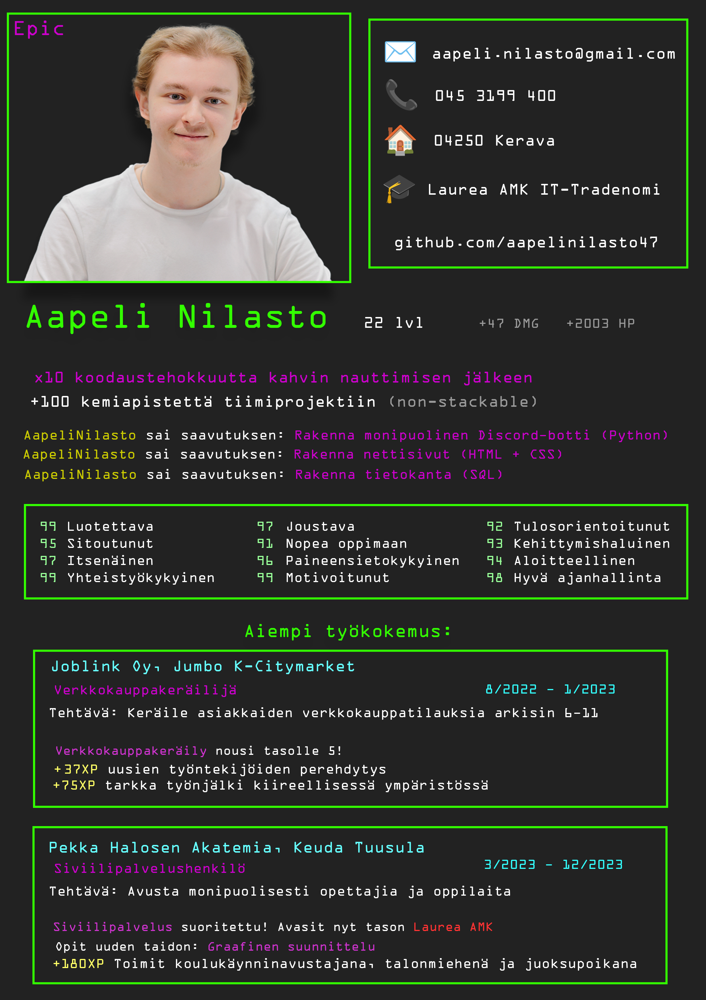

Olen Aapeli Nilasto, 22-vuotias ohjelmoija ja web-kehittäjä.
Alta löytyy CV:ni ja lisätietoa minusta!
🚀 Parhaiten opin tekemällä ja kokeilemalla. Rakastan sitä hetkeä, kun jokin asia vihdoin toimii, ja pääsen näkemään tulokset heti ruudulla.
🎮 Vapaa-ajalla nautin videopelien pelaamisesta, uusien teknologioiden tutkimisesta ja koodaamisesta ihan huvin vuoksi. Teen myös projekteja, jotka eivät liity kouluun, ihan vain oppiakseni lisää!
💡 Lempityökalujani ovat VS Code, GitHub ja Python. Olen kiinnostunut erityisesti sovellusten, pelien ja nettisivujen kehittämisestä.
🎯 Tulevaisuudessa haluan kehittää isompia sovelluksia tai pelejä, ja saada omia ideoita ja luovuutta mukaan!
Ota yhteyttä, jos haluat tietää lisää tai tehdä yhteistyötä!